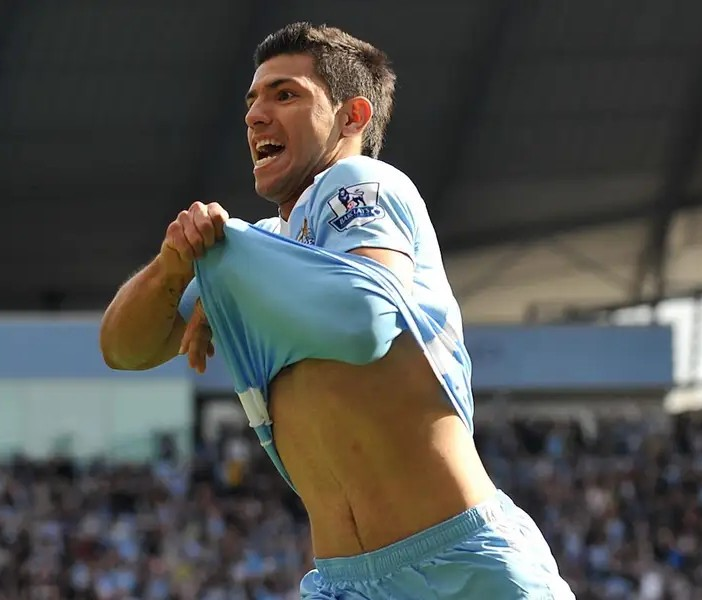
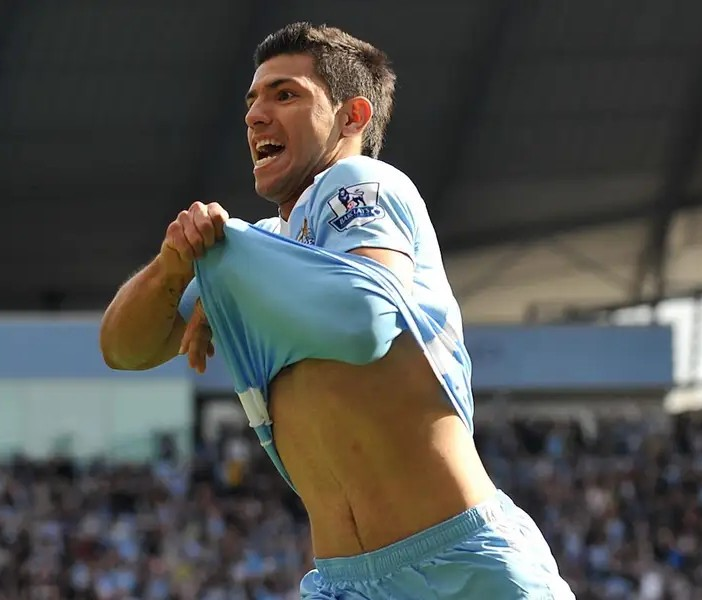

Història del futbol

El futbol modern neix al segle XIX a Anglaterra, quan es van establir regles clares, federacions i competicions oficials. Amb el temps, el futbol es va expandir per Europa i Amèrica del Sud, convertint-se en un fenomen global que avui mou milions de persones cada setmana.
Regles bàsiques

Un partit de futbol es disputa entre dos equips d'onze jugadors cadascun, amb l’objectiu de marcar més gols que l’adversari. El joc es disputa en un camp rectangular amb dues porteries i dura 90 minuts dividits en dues parts de 45. Les normes, regulades per la FIFA, garanteixen el joc net i estableixen aspectes com les faltes, els fora de joc o les sancions. Tot i la seva simplicitat, aquestes regles han permès que el futbol sigui un esport mundialment famós.
Jugadors i llegendes

Al llarg de la història, el futbol ha donat lloc a figures que són i seran recordades durant molt anys. Pelé va ser el primer gran símbol global del futbol, Johan Cruyff va revolucionar el joc amb la seva visió tàctica, Lionel Messi ha meravellat amb la seva habilitat i tècnica, Diego Armando Maradona va captivar el món amb la seva màgia i Cristiano Ronaldo ha demostrat que l'esforç i la dedicació són claus en els esports. Tots ells han deixat empremta i han inspirat milions de persones arreu del món.
Moments mitícs

En el futbol hi ha moments mítics i inoblidables que han marcat la història d’aquest esport. Són instants que emocionen aficionats de tot el món i que es recorden en el temps. Per exemple:
Iniesta al Mundial 2010: el gol que va donar el títol a Espanya contra Holanda.
Messi contra el Getafe (2007): una jugada que recorda al “Gol del Segle” de Maradona.
Remuntada del Barça contra el PSG (2017): un 6–1 històric al Camp Nou.
Gol de James Rodríguez al Mundial 2014: un xut increible contra l’Uruguai.
Imatges

 
